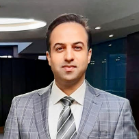
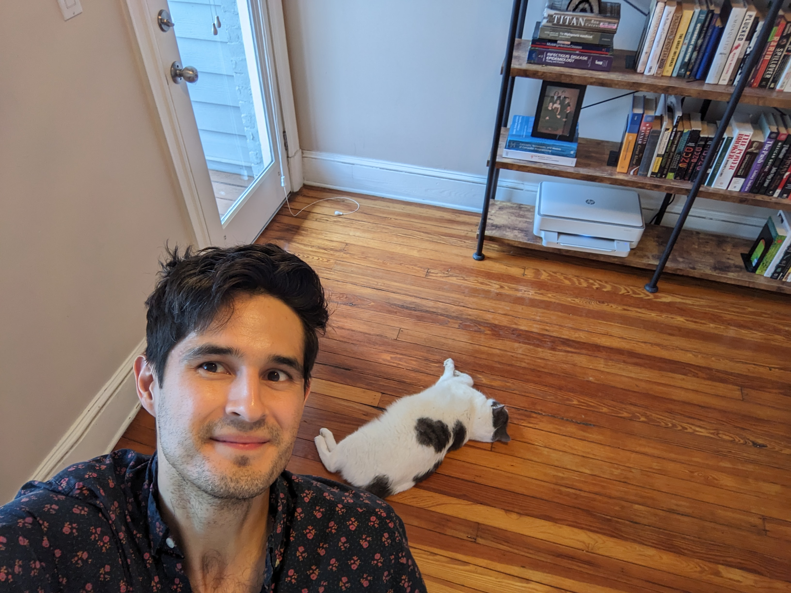

Sponsored by The Institute for Data Engineering and Science (IDEaS).
Supported by the School of Computer Science.
Foundations of Artificial Intelligence Seminar Series
by Foundations of Artificial Intelligence @ Georgia Institute of Technology
Welcome to the AI Seminar Series @ Georgia Tech, a seminar showcasing the latest research and developments in Artificial Intelligence. Our goal is to bring together students, postdocs, professors, and industry researchers to discuss a wide range of AI topics, including Machine Learning, Efficient AI, Symbolic AI, AI Theory, AI Systems, and the intersection of AI and Programming Languages and Software Engineering (PLSE).
Speaker Schedule and Abstracts
Future Talks
-
🎤Walter Moreira
🏛️University of Texas at Austin
📅Thursday, Feb 5th, 2026| 4PM - 5PM (ET)
📍 Classroom 183, J. Erskine Love Building|
💻Zoom
📚Automated Formalization of OEIS using the Sequencelib Platform
📝Abstract The On-Line Encyclopedia of Integer Sequences (OEIS) is a web-accessible database cataloging interesting integer sequences and associated theorems. With more than 390,000 sequences and 12,000 citations, the OEIS is one of the most robust and highly cited resources in all of theoretical mathematics. The Sequencelib project provides an open-source computational platform to formalize the mathematics contained within the OEIS using the Lean programming language. With contributions made through a combination of hand-written formalizations, AI and metaprogramming, Sequencelib currently contains formalizations for more than 25,000 sequences and over 1.6 million theorems about their values. In this second talk, we will provide an overview of the design and implementation of the metaprogramming capabilities in Sequencelib, including the OEIS attribute, which can be used to automatically attach OEIS sequence metadata to a Lean definition, and the oeis-tactic, which can be used to automatically prove theorems about the values of sequences. We also detail OEIS-LT, a lightweight, multi-threaded Lean tool server that bundles these capabilities into a scalable, machine-friendly API. Together, these tools support automated formalization workflows, and as an example, we describe the design and implementation of a computational pipeline that built on the work of Gauthier, et al. and leveraged OEIS-LT to formalize more than 25,000 sequences from the OEIS.👤BioDr. Walter Moreira is a mathematician and software engineer that has experience across a wide spectrum of disciplines. With a background in pure mathematics, he has worked at the Astronomy Department at the University of Texas at Austin, the Texas Advanced Computing Center, and Canon Nanotechnologies, among other places. He specializes in developing software containing strong theoretical foundations and using formal methods. He is currently working on the formalization of the On-Line Encyclopedia of Integer Sequences.
Past Talks
-
🎤Joe Stubbs
🏛️University of Texas at Austin
📅Tuesday, Feb 3rd, 2026| 4PM - 5PM (ET)
📍 Classroom 380, Bunger Henry Building|
💻Zoom
📚Sequencelib: A Platform for Formalizing the OEIS
📝Abstract The On-Line Encyclopedia of Integer Sequences (OEIS) is a web-accessible database cataloging interesting integer sequences and associated theorems. With more than 390,000 sequences and 12,000 citations, the OEIS is one of the most robust and highly cited resources in all of theoretical mathematics. The Sequencelib project provides an open-source computational platform to formalize the mathematics contained within the OEIS using the Lean programming language. With contributions made through a combination of hand-written formalizations, metaprogramming, and AI, Sequencelib currently contains formalizations for more than 25,000 sequences and over 1.6 million theorems about their values. In this first of two talks, we will provide an introduction to the Sequencelib platform and describe its position within the Lean ecosystem, including its relationship to Mathlib, Lean's massive open-source library of formalized Mathematics. We will define precisely what is meant by "formalizing an OEIS sequence", and we will walk through the steps involved in a typical sequence formalization, showing how to use the primary Sequencelib facilities that support metadata collection and proof synthesis within the Lean interactive theorem prover. We will also discuss some of the interesting sequences that have been formalized in Sequencelib and survey some areas for future work and contributions.👤BioDr. Joe Stubbs is a Research Scientist at the University of Texas at Austin and leads the Cloud and Interactive Computing (CIC) group at the Texas Advanced Computing Center (TACC). CIC researches, builds and maintains national-scale cloud computing platforms and distributed systems for advanced research computing. He is the PI of multiple NSF-funded projects, and he leads TACC’s involvement in the NSF-funded ICICLE AI Institute. He also teaches courses and mentors students in the Computational Engineering program within the Cockrell School of Engineering at the University of Texas at Austin. His research and teaching focus on software engineering, scalable distributed systems design, formal methods and AI, and with Walter Moreira, he leads the Sequencelib project, a platform for formalizing the mathematics contained within the On-line Encyclopedia of Integer Sequences (OEIS) in the Lean 4 theorem prover.
-
🎤Pat Langley
🏛️Georgia Tech Research Institute
📅Friday, Jan 30th, 2026| 4PM - 5PM (ET)
📍 Classroom 380, Bunger Henry Building|
💻Zoom
📚Integrated Systems for Computational Scientific Discovery: Progress, Challenges, and Implications
📝Abstract There has been a steady stream of AI work on scientific discovery since the 1970s, much of it leading to published results in fields like astronomy, biology, chemistry, and physics. However, most efforts have focused on isolated tasks rather than addressing their interaction. In this talk, I challenge the research community to develop and adopt integrated discovery systems. I note distinguishing features of scientific discovery and examine five component abilities, in each case specifying the problem and reviewing results in the area. After this, I note some successes at partial integration and consider some remaining hurdles that we must leap to transform the vision for integrated discovery into reality. I also discuss promising domains, natural and synthetic, in which to test such computational artifacts. In closing, I consider ways that integrated discovery can aid the scientific enterprise and factors that influence whether results are trustworthy. Langley, P. (2024). Integrated systems for computational scientific discovery. Proceedings of the Thirty-Eighth AAAI Conference on Artificial Intelligence. Vancouver, BC: AAAI Press. http://www.isle.org/~langley/papers/discovery.aaai24.pdf👤BioDr. Pat Langley is a Principal Research Scientist at Georgia Tech Research Institute and Director of the Institute for the Study of Learning and Expertise. He has contributed to AI and cognitive science for more than 40 years, publishing over 300 papers and five books on these topics. Dr. Langley developed some of the first computational approaches to scientific knowledge discovery, and he was an early champion of experimental studies of machine learning and its application to real-world problems. He is the founding editor of two journals, Machine Learning in 1986 and Advances in Cognitive Systems in 2012, and he is a Fellow of both AAAI and the Cognitive Science Society. Dr. Langley's current research focuses on architectures for embodied agents, explainable, normative, and justified agency, and induction of dynamic process models from time series and background knowledge.
-
🎤Karthik Pattabiraman
🏛️Department of Electrical and Computer Engineering, University of British Columbia
📅Thursday, November 6, 2025 | 4PM - 5PM (ET)
📍 Classroom N210, Howey Physics Building|
💻Zoom
📚Building Error Resilient and Attack Resilient Machine Learning Systems
📝Abstract Machine Learning (ML) has increasingly been adopted in safety-critical domains such as autonomous vehicles, healthcare and robotics. In these domains, reliability and security are important considerations, and hence it is critical to ensure the resilience of ML systems to faults and attacks. Hardware faults such as soft errors are becoming more frequent in computer systems due to the effects of technology scaling and power constraints. These faults can lead to ML systems malfunctioning, and cause safety violations. Further, errors in the training data have been widely observed in real-world training datasets, and these can lead to significant degradation of accuracy. Finally, membership inference attacks (MIAs) on ML applications can seriously compromise their privacy. In this talk, I’ll present the work we’re doing in my group to ensure the resilience of ML systems in the presence of both faults and attacks. First, for hardware faults, we propose Ranger, an automated transformation for Deep Neural Network (DNN)-based systems that filters out the hardware faults that are likely to cause Silent Data Corruptions (SDCs). Second, for training data faults, we propose the use of specially crafted ensemble-based techniques based on design diversity to recover from such faults. Finally, for MIAs, we propose HAMP, a technique to reduce the propensity of DNNs to MIAs by reducing the confidence-level of its predictions without compromising utility. I will conclude by presenting the future challenges in this area. This is joint work with my students and colleagues at UBC, and industry collaborators.👤Bio
 Karthik Pattabiraman is a Professor of Electrical and Computer Engineering (ECE) at the University of British Columbia (UBC). He received his PhD in 2009 in Computer Science from the University of Illinois at Urbana-Champaign (UIUC), an MS in Computer Science also from UIUC in 2004, and B. Tech. from the University of Madras, India, in 2001. Before joining UBC in 2010, he was a postdoctoral researcher at Microsoft Research (MSR), Redmond. Karthik’s research interests are in dependable computer systems, software security, cyber-physical systems, and software engineering. Karthik has won awards such as the Inaugural IEEE Rising Star in Dependability Award, the Jean Claude Laprie award in dependable computing, UIUC CS department’s early career alumni achievement award, UBC-wide Killam mentoring excellence award, UBC-wide Killam Faculty Research Prize and the Killam Faculty Research Fellowship, NSERC Discovery Accelerator Supplement (DAS) in Canada, and the William Carter PhD Dissertation Award. Karthik is a distinguished member of the ACM, a distinguished contributor and distinguished visitor of the IEEE Computer Society, and a professional engineer (P.Eng.).
Karthik Pattabiraman is a Professor of Electrical and Computer Engineering (ECE) at the University of British Columbia (UBC). He received his PhD in 2009 in Computer Science from the University of Illinois at Urbana-Champaign (UIUC), an MS in Computer Science also from UIUC in 2004, and B. Tech. from the University of Madras, India, in 2001. Before joining UBC in 2010, he was a postdoctoral researcher at Microsoft Research (MSR), Redmond. Karthik’s research interests are in dependable computer systems, software security, cyber-physical systems, and software engineering. Karthik has won awards such as the Inaugural IEEE Rising Star in Dependability Award, the Jean Claude Laprie award in dependable computing, UIUC CS department’s early career alumni achievement award, UBC-wide Killam mentoring excellence award, UBC-wide Killam Faculty Research Prize and the Killam Faculty Research Fellowship, NSERC Discovery Accelerator Supplement (DAS) in Canada, and the William Carter PhD Dissertation Award. Karthik is a distinguished member of the ACM, a distinguished contributor and distinguished visitor of the IEEE Computer Society, and a professional engineer (P.Eng.).-
🎤Grant Schoenebeck
🏛️School of Information, University of Michigan
📅Thursday, October 16, 2025 | 4PM - 5PM (ET)
📍 Classroom 204 Cherry Emerson |
💻Zoom
📚Eliciting Informative Text Evaluations with Large Language Models
📝Abstract In a wide variety of contexts including peer grading, peer review, and crowd-sourcing (e.g. evaluating LLM outputs) we would like to design mechanisms which reward agents for producing high quality responses. Unfortunately, computing rewards by comparing to ground truth or gold standard is often cumbersome, costly, or impossible. Instead we would like to compare agent reports. Peer prediction mechanisms motivate high-quality feedback with provable guarantees. However, current methods only apply to rather simple reports, like multiple-choice or scalar numbers. We aim to broaden these techniques to the larger domain of text-based reports, drawing on the recent developments in large language models. This vastly increases the applicability of peer prediction mechanisms as textual feedback is the norm in a large variety of feedback channels: peer reviews, e-commerce customer reviews, and comments on social media. I will introduce mechanisms that utilize LLMs as predictors, mapping from one agent’s report to a prediction of her peer’s report. Theoretically, we show that when the LLM prediction is sufficiently accurate, our mechanisms can incentivize high effort and truth-telling as an (approximate) Bayesian Nash equilibrium. Empirically, we confirm the efficacy of our mechanisms through experiments conducted on two real datasets: the Yelp review dataset and the ICLR OpenReview dataset. We highlight the results that on the ICLR dataset, our mechanisms can differentiate three quality levels — human written reviews, GPT-4-generated reviews, and GPT-3.5-generated reviews in terms of expected scores.👤Bio
 Grant Schoenebeck is an associate professor at the University of Michigan in the School of Information. His work has recently focused on develop and analyze systems for eliciting and aggregating information from of diverse group of agents with varying information, interests, and abilities by combining ideas from theoretical computer science, machine learning, and economics (e.g game theory, mechanism design, and information design). More generally his recent work has been about incentives and (machine) learning in a variety of contexts. His research is supported by the NSF including an NSF CAREER award. Before coming to the University of Michigan in 2012, he was a Postdoctoral Research Fellow at Princeton. Grant received his PhD at UC Berkeley, studied theology at Oxford University, and received his BA in mathematics and computer science from Harvard.
Grant Schoenebeck is an associate professor at the University of Michigan in the School of Information. His work has recently focused on develop and analyze systems for eliciting and aggregating information from of diverse group of agents with varying information, interests, and abilities by combining ideas from theoretical computer science, machine learning, and economics (e.g game theory, mechanism design, and information design). More generally his recent work has been about incentives and (machine) learning in a variety of contexts. His research is supported by the NSF including an NSF CAREER award. Before coming to the University of Michigan in 2012, he was a Postdoctoral Research Fellow at Princeton. Grant received his PhD at UC Berkeley, studied theology at Oxford University, and received his BA in mathematics and computer science from Harvard.-
🎤Irfan Essa
🏛️School of Interactive Computing, Georgia Institute of Technology
📅Tuesday, October 7, 2025 | 12:00 PM - 1:00 PM (ET)
📍 CODA Building 9th floor Atrium |
💻Zoom
📚Wizard of Oz at the Sphere
📝Abstract In the classic 1939 film The Wizard of Oz, Dorothy travels from Kansas to Oz. Using the wizardry of Google AI, Dorothy and her friends now are visiting the Sphere in Las Vegas for an immersive and experiential retelling of their story! In partnership with Sphere Inc., Warner Bros. Magnopus, teams from GDM and Google Cloud have reimagined "The Wizard of Oz" as an immersive experience for the Sphere, an enormous (yes) sphere-shaped venue that seats more than 17,000 people. A traditional movie experience it is not. In this talk, I will present details of this project, first announced at Google Cloud Next '25, The goal was to use AI to augment the work of VFX artists, elevating the visual content of the 1939 classic for Sphere's one-of-a-kind display all while honoring the original story. To tackle the unique challenges of enhancing and scaling this classic film for the world's largest screen, our teams developed new AI capabilities, including: 1) Veo driven fine-tuning for character performance to ensure that beloved characters' movements remained authentic. 2) AI-powered super-resolution to upscale classic footage to an unprecedented scale. 3) Outpainting to extend characters and foreground elements beyond the boundary of the original film, which is limited in scale and aspect ratio. Google teams developed novel AI techniques, to bring a classic film from a cinematic to an experiential medium and provided technologies to artists to create a truly special 75 minute movie + experience through care and commitment to craft, storytelling, and authenticity. This project involved working with over a thousand artists, researchers and engineers to create a new form of entertainment and a landmark effort in the history of entertainment that will be running in Las Vegas for a long time.👤BioIrfan Essa is a Distinguished Professor in the School of Interactive Computing (iC) and a Senior Associate Dean in the College of Computing (CoC), at the Georgia Institute of Technology (GA Tech), in Atlanta, Georgia, USA. He is serving as the Inaugural Executive Director of the new Interdisciplinary Research Center for Machine Learning at Georgia Tech (ML@GT). He also serves as a Senior Staff Research Scientist at Google Inc. Professor Essa works in the areas of Computer Vision, Machine Learning, Computer Graphics, Computational Perception, Robotics, Computer Animation, and Social Computing, with potential impact on Autonomous Systems, Video Analysis, and Production (e.g., Computational Photography & Video, Image-based Modeling and Rendering, etc.) Human Computer Interaction, Artificial Intelligence, Computational Behavioral/Social Sciences, and Computational Journalism research. He has published over 200 scholarly articles in leading journals and conference venues on these topics and several of his papers have also won best paper awards. He has been awarded the NSF CAREER and was elected to the grade of IEEE Fellow. He has held extended research consulting positions with Disney Research and Google Research and also was an Adjunct Faculty Member at Carnegie Mellon’s Robotics Institute. He joined GA Tech Faculty in 1996 after his earning his MS (1990), Ph.D. (1994), and holding research faculty position at the Massachusetts Institute of Technology (Media Lab) [1988-1996].
-
🎤Ali Sarhadi
🏛️School of Earth and Atmospheric Sciences, Georgia Institute of Technology
📅Monday, September 22nd, 2025 | 12:00 PM - 1:00 PM (ET)
📍 Classroom 320 Cherry Emerson |
💻Zoom
📚Physics-Informed Machine Learning for Climate Risk
📝Abstract As climate change accelerates, the threat from compound weather and climate extremes—events in which multiple hazards interact to produce disproportionately large and often unpredictable impacts—is rapidly growing. This talk explores how AI techniques—including probabilistic graphical models, physics-informed machine learning, and generative AI—can effectively characterize and predict the evolving dynamics of these complex events under a nonstationary, warming climate, with an emphasis on hurricane-driven compound hazards. By embedding physical constraints into data-driven models, we develop scientifically grounded, scalable, and generalizable tools to assess emerging risks and inform adaptive strategies that enhance resilience in the face of escalating climate extremes.👤BioAli Sarhadi is an Assistant Professor in the School of Earth and Atmospheric Sciences at the Georgia Institute of Technology, where he leads the Climate Risk & Extremes Dynamics Lab. His research focuses on climate extremes, compound and cascading hazards, and the integration of physics-informed artificial intelligence to assess and mitigate climate risks in a warming world. Dr. Sarhadi develops high-resolution simulations, physics-based models, and machine learning and climate AI tools to study tropical cyclones and their associated hazards, and to quantify their drivers, dynamics, and impacts on coastal communities and
-
🎤Ann Fitz-Gerald
🏛️Balsillie School of International Affairs
📅Monday, September 8th, 2025 | 4:00 PM - 5:00 PM (ET)
📍215 Classroom Instructional Center |
💻Zoom
📚Talk Title: AI, new national security threat vectors, and ungoverned space
📝Abstract Artificial intelligence is part of a broader “general-purpose” technology ecosystem that is transforming global security. Alongside AI, new threat vectors are emerging—from the growing role of non-state actors to the expansion of national security domains beyond land, sea, and air to include cyber and space. For middle powers, this landscape is further complicated by patchwork regulatory frameworks and the dominance of rules set by global powers. At the same time, the distinction between economic security and national security is rapidly dissolving, raising urgent questions about resilience, sovereignty, and competitiveness. This talk will explore what these shifts mean for the national capacity of governments, the role of civil servants, and the need to reimagine defence and security institutions in a digital era.👤BioProfessor Ann Fitz-Gerald is the Director of the Balsillie School of International Affairs since August 2019 and has led the School’s “Technology Governance Initiative” since 2023. She has degrees in both commerce and political science from Queen’s University and was the first civilian female to graduate from the Royal Military College of Canada. Before completing a PhD in the UK, she worked at the Pearson Peacekeeping Centre, NATO headquarters, and the North Atlantic Assembly. She has worked as an academic at King’s College, London University and Cranfield University, where, before her move back to Canada, she was Director, Defence and Security Leadership at Cranfield’s Defence Academy of the United Kingdom campus. Ann is a Senior Research Fellow at the Royal United Services Institute, a Senior Fellow at the Institute for Peace and Diplomacy, a Fellow at McLaughlin College, York University and has served/still serves on a number of non-executive boards and in advisory roles for the British Government, the United Nations and the African Union. Ann is widely published on issues concerning the governance of national security and has helped facilitate national security policies and strategies in a number of conflict-affected countries including Afghanistan, Ethiopia, Sudan, Ukraine, Sierra Leone, Nepal, Serbia, Nigeria and others. She provides regular media commentary for both national and international broadcast media. She has also been appointed by organizations such as the United Nations, the African Union and the British Government to support internationally-sponsored peace talks, including the Sudan-South Sudan peace talks led by former South African President Thabo Mbeki – efforts for which the Government of Canada awarded Ann with the Queen’s Diamond Jubilee Medal. In December 2024, Ann was recognized for her ongoing research on defence and national security and for her leadership of the Balsillie School of International Affairs and awarded the King Charles III Coronation Medal.
-
🎤Constantinos Dovrolis
🏛️School of Computer Science, Georgia Tech
📅Thursday, May 1st, 2025 | 1:00 PM - 2:00 PM (ET)
📍2456 Classroom, Klaus |
💻Zoom
📚Talk Title: Sparsity, Modularity, and Plasticity in Deep Neural Networks
📝Abstract There is a growing overlap between Machine Learning, Neuroscience, and Network Theory. These three disciplines create a fertile inter-disciplinary cycle: a) inspiration from neuroscience leads to novel machine learning models and deep neural networks in particular, b) these networks can be better understood and designed using network theory, and c) machine learning and network theory provide new modeling tools to understand the brain's structure and function, closing the cycle. In this talk, we will "tour" this cross-disciplinary research agenda by focusing on three recent works: a) the design of sparse neural networks that can learn fast and generalize well, b) the use of structural adaptation (plasticity) for continual learning, and c) the effects of a task's hierarchically modularity on generalization and learning efficiency.👤BioDr. Constantine Dovrolis is the Director of the center for Computational Science and Technology (CaSToRC) at The Cyprus Institute (CyI) as of 1/1/2023. He is also a Professor at the School of Computer Science at the Georgia Institute of Technology (Georgia Tech). He is a graduate of the Technical University of Crete (Engr.Dipl. 1995), University of Rochester (M.S. 1996), and University of Wisconsin-Madison (Ph.D. 2000).
His research is inter-disciplinary, combining Network Theory, Data Mining and Machine Learning. Together with his collaborators and students, they have published in a wide range of scientific disciplines, including climate science, biology, and neuroscience. More recently, his group has been focusing on neuro-inspired architectures for machine learning based on what is currently known about the structure and function of brain networks.
According to Google Scholar, his publications have received more than 15,000 citations with an h-index of 56. His research has been sponsored by US agencies such as NSF, NIH, DOE, DARPA, and by companies such as Google, Microsoft and Cisco. He has published at diverse peer-reviewed conferences and journals such as the International Conference on Machine Learning (ICML), the ACM SIGKDD conference, PLOS Computational Biology, Network Neuroscience, Climate Dynamics, the Journal of Computational Social Networks, and others. -
🎤Kaiyu Yang
🏛️Meta Fundamental AI Research (FAIR)
📅Tuesday, April 29th, 2025 | 2:00 PM - 3:00 PM (ET)
💻Zoom
📚Talk Title: Formal Reasoning Meets LLMs: Toward AI for Mathematics and Verification
📝Abstract AI for Mathematics (AI4Math) is intellectually intriguing and crucial for AI-driven system design and verification. Much of the recent progress in this field has paralleled advances in natural language processing, especially by training large language models on curated mathematical text datasets. As a complementary yet less explored avenue, formal mathematical reasoning is grounded in formal systems such as Lean, which can verify the correctness of reasoning and provide automatic feedback. This talk introduces the basics of AI for formal mathematical reasoning, focusing on two central tasks: theorem proving (generating formal proofs given theorem statements) and autoformalization (translating from informal to formal). I will highlight the unique challenges of these tasks through two recent projects: one on proving inequality problems from mathematics olympiads, and another on autoformalizing Euclidean geometry problems.👤Bio
 Dr. Kaiyu Yang is a Research Scientist at Meta Fundamental AI Research (FAIR), where he focuses on enhancing AI's capabilities in mathematical reasoning by integrating formal systems such as Lean. His research explores how machine learning and large language models can generate mathematical conjectures, prove theorems, and perform reasoning that combines natural and formal languages. Before joining FAIR, he was a postdoctoral scholar at Caltech. He received a Ph.D. in computer science from Princeton University and bachelor's degrees in computer science and mathematics from Tsinghua University.
Dr. Kaiyu Yang is a Research Scientist at Meta Fundamental AI Research (FAIR), where he focuses on enhancing AI's capabilities in mathematical reasoning by integrating formal systems such as Lean. His research explores how machine learning and large language models can generate mathematical conjectures, prove theorems, and perform reasoning that combines natural and formal languages. Before joining FAIR, he was a postdoctoral scholar at Caltech. He received a Ph.D. in computer science from Princeton University and bachelor's degrees in computer science and mathematics from Tsinghua University.
-
🎤Ben Zorn
🏛️Microsoft Research
📅Thursday, April 17th, 2025 | 3:00 PM - 4:00 PM (ET)
📍C341 Classroom Van Leer
📚Talk Title: Anticipating the Accelerating Growth of AI Software
📝Abstract Incorporating AI models at runtime into software systems creates "AI Software" (AISW), which is distinct from "Plain Old Software" (POSW) that doesn't use AI models. AISW is fundamentally different from POSW in both capabilities and characteristics. Various names for AISW include copilots, agents, and GPTs, but regardless of the name, AISW has properties that invalidate many traditional software engineering techniques developed for POSW.
In my talk, I will discuss the growing importance of AISW, its differences from POSW, and the need for the systems community to adapt to this trend. Key differences include the rapid development of new AI models, new operational modalities like vision and audio, larger input contexts, unclear prompt specifications, and diverse failure modes of AI models.
To make my points concrete, I will focus on two open-source projects I've been involved with: GenAIScript, which is a JavaScript-based scripting language for building AISW applications (Generative AI Scripting | GenAIScript), and PromptPex, which is a unit test generation tool for testing AI model prompts (microsoft/promptpex: Prompt Exploration).👤BioBen Zorn is Partner Researcher and former co-manager of the Research in Software Engineering (RiSE) group in Microsoft Research, Redmond WA working on programming languages, software engineering and artificial intelligence. His research interests include usability, security, and reliability, including reliability of artificial intelligence. From 1990-1998 he was an Assistant and Associate Professor of Computer Science at the University of Colorado, Boulder. He has a PhD in computer science from the University of California at Berkeley. Ben has served as the Program Chair and General Chair of PLDI, served on the Executive Committee of SIGPLAN, as a member of the Computing Community Consortium (CCC) Council, is currently a member of the CRA Board of Directors and in 2021 he co-founded the CRA-Industry committee. He is an AAAS Fellow, an ACM Fellow and in 2021 he received the SIGPLAN Distinguished Service Award. -
🎤Kevin Leyton-Brown
🏛️University of British Columbia
📅Friday, April 4th, 2025 | 4:00 PM - 5:00 PM (ET)
📍1447 Classroom Klaus
🤝Joint FoAI + ARC + IDEaS Seminar
👥Organizers: Vijay Ganesh, Will Perkins, and Juba Ziani
📚Talk Title: STEER: Assessing the Economic Rationality of Large Language Models
📝Abstract There is increasing interest in using LLMs as decision-making "agents." Doing so includes many degrees of freedom: which model should be used; how should it be prompted; should it be asked to introspect, conduct chain-of-thought reasoning, etc? Settling these questions -- and more broadly, determining whether an LLM agent is reliable enough to be trusted -- requires a methodology for assessing such an agent's economic rationality. This talk describes one. We survey the economic literature on both strategic and non-strategic decision making, taxonomizing 124 fine-grained "elements" that an agent should exhibit, each of which can be tested in up to 3 distinct ways, grounded in up to 10 distinct domains, and phrased according to 5 perspectives (first-person, second-person, etc). The generation of benchmark data across this combinatorial space is powered by a novel LLM-assisted data generation protocol that we dub auto-STEER, which generates questions by adapting handcrafted templates to new domains and perspectives. Because it offers an automated way of generating fresh questions, auto-STEER mitigates the risk that LLMs will be trained to overfit evaluation benchmarks; we thus hope that it will serve as a useful tool both for evaluating and fine-tuning models for years to come. Finally, we describe the results of a large-scale empirical experiment with 28 different LLMs, ranging from small open-source models to the current state of the art. We examined each model's ability to solve problems across our whole taxonomy and present the results across a range of prompting strategies and scoring metrics.👤BioKevin Leyton-Brown is a professor of Computer Science and a Distinguished University Scholar at the University of British Columbia. He holds a Canada CIFAR AI Chair at the Alberta Machine Intelligence Institute and is an associate member of the Vancouver School of Economics. He received a PhD and an M.Sc. from Stanford University (2003; 2001) and a B.Sc. from McMaster University (1998).
-
🎤José Cambronero
🏛️Google
📅Wednesday, April 2nd, 2025 | 3:30 PM - 4:30 PM (ET)
📍1456 Classroom Klaus
🤝Joint PLSE + FoAI Seminar
👥Organizers: Vijay Ganesh and Alex Orso
📚Talk Title: Let the Agent Do It: Fixing, Validating, and Migrating Code at Google with LLM-based Software Agents
📝Abstract The DevAI team at Google is tasked with developing AI-based features for our internal tools with the goal of making Google software developers more effective and efficient at their jobs. In this talk, I'll provide an overview of some of the unique challenges of applying AI to internal Google developer systems. These challenges motivate the need to build solutions tailored to Google, and I'll present two such LLM-based systems: a program repair agent and a test generation agent, which can respectively patch real Google bugs and generate tests that improve our confidence in these patches. In addition, I will describe broad use cases for AI-based code migration in our codebase. Throughout the talk, I'll focus on some of the open challenges we have faced and how those can inform ongoing research in software engineering and AI.👤BioJosé Cambronero is a staff software engineer in Google's DevAI team, where he researches new AI-based solutions to software engineering challenges encountered by Google developers. Prior to joining Google, José was a senior researcher in the PROSE team at Microsoft, working on program synthesis and repair. José holds a PhD in Computer Science from MIT, where he worked under the supervision of Martin Rinard. José is originally from Costa Rica but has bounced around a large portion of the USA's east coast.
-
🎤Mirco Giacobbe
🏛️University of Birmingham
📅Thursday, March 6th, 2025 | 3:30 PM - 4:30 PM (ET)
📍L5 Classroom Howey Physics
📚Talk Title: Neural Model Checking
📝Abstract Model checking aims to derive rigorous proofs for the correctness of systems and has traditionally relied on symbolic reasoning methods. In this talk, I will argue that model checking can also be effectively addressed using machine learning too. I will present a realm of approaches for formal verification that leverage neural networks to represent correctness certificates of systems, known as "neural certificates." This approach trains certificates from synthetic executions of the system and then validates them using symbolic reasoning techniques. Building upon the observation that checking a correctness certificate is much simpler than finding one, and that neural networks are an appropriate representation for such certificates, this results in a machine learning approach to model checking that is entirely unsupervised, formally sound, and practically effective. I will demonstrate the principles and experimental results of this approach in safety assurance of software, probabilistic systems, and control.👤BioMirco Giacobbe is an Assistant Professor at the University of Birmingham. He previously held research positions at the University of Oxford and Fondazione Bruno Kessler. He obtained his PhD at the Institute and Science and Technology Austria and studied at the University of Trento and RWTH Aachen. His research interests lie between formal methods and artificial intelligence, where he develops automatic techniques to assure that algorithmic systems are safe and trustworthy.
-
🎤Aishik Ghosh
🏛️UC Irvine & Berkeley Lab
📅Wednesday, March 5th, 2025 | 3:30 PM - 4:30 PM (ET)
📍1456 Classroom Klaus
📚Talk Title: Probing High-Dimensional Spaces in Particle Physics: From Simulation-Based Inference to Theory Design
📝Abstract Particle physicists grapple with the largest data analysis problems, with the Large Hadron Collider soon to generate data at a rate of 100 TB/s. When confronted with extremely high-dimensional problems, physicists traditionally reduce the challenge to a lower dimensional representation where they can build intuition. I will discuss why such dramatic data reduction leads to loss of crucial information, and how neural networks can be combined with uncertainty quantification tools to perform statistical analysis directly using the high-dimensional data. This newly developed method is now being deployed as a service on DOE supercomputers, to usher in an extra of high-dimensional statistical analysis across particle physics experiments.
Similarly, a significant challenge in theoretical physics is the vast space of mathematical symmetries available to describe our Universe. Despite the dedicated efforts of theorists to explore this expanse, an overwhelming majority remains uncharted. I will discuss an ambitious new research direction in theoretical physics where, in collaboration with researchers at Georgia Tech, we leverage computational and AI tools to uncover new avenues for neutrino theory model building.👤BioDr. Aishik Ghosh is a postdoctoral scholar at UC Irvine and an affiliate at Berkeley Lab, focusing on the development of high-dimensional statistical inference and uncertainty quantification methods using AI for particle and astrophysics. He has papers in physics and astrophysics journals, as well at NeurIPS. He also developed the first deep generative models for fast simulation to be deployed in a particle physics experiment in 2018. Recently, Aishik has been developing advanced symbolic regression and reinforcement learning methods to address challenges in theoretical neutrino physics in an interdisciplinary collaboration with Prof. Vijay Ganesh at Georgia Tech. Previously, he earned his PhD in particle physics from the University of Paris-Saclay. -
🎤Xia (Ben) Hu
🏛️Rice University
📅Wednesday, February 12th, 2025 | 12:30 PM - 1:30 PM (ET)
📍Klaus 1456
📚Talk Title: Efficient LLM Serving via Lossy Computation
📝Abstract Large language models (LLMs) have exhibited human-like conversational abilities. Yet, scaling LLMs to longer contexts, such as extracting information from lengthy articles—one of the most fundamental tasks in healthcare applications—poses significant challenges. The primary issues are their inability to handle contexts beyond pre-training lengths and system constraints that make deployment difficult, as memory requirements for inference increase with context length. The key idea to overcome these challenges is that LLMs are extremely robust to noise from lossy computation, such as low-precision computation. Following this insight, we will discuss recent advancements in serving LLMs at scale, particularly in handling longer contexts. To address the algorithmic challenge, I will share our recent work on extending LLM context length to at least 8× longer by coarsening the positional information of distant tokens. To address the system challenge, I will discuss our recent efforts in quantizing the intermediate states of past tokens to 2-bit numbers, leading to a 8x memory efficiency and 3.5x wall-clock time speedup without harming performance. Finally, I will highlight our latest projects applying LLMs in healthcare, particularly how we utilize retrieval techniques for long contexts to mitigate the hallucination problem in healthcare chatbots.👤BioDr. Xia "Ben" Hu is an Associate Professor at Rice University in the Department of Computer Science. Dr. Hu has published over 200 papers in several major academic venues, including NeurIPS, ICLR, ICML, KDD, IJCAI, etc. An open-source package developed by his group, namely AutoKeras, has become the most used automated deep learning system on GitHub (with over 9,000 stars and 1,000 forks). Additionally, his work on LLM efficiency, deep collaborative filtering, anomaly detection, knowledge graphs, and fast interpretation has been incorporated into production systems at Hugging Face, TensorFlow, Apple, Bing, and Meta, respectively. His papers have received several Best Paper (Candidate) awards from venues such as ICML, WWW, WSDM, ICDM, AMIA, and INFORMS. He is the recipient of the NSF CAREER Award and the ACM SIGKDD Rising Star Award. His work has been cited more than 30,000 times with an h-index of 76. He served as General Co-Chair for WSDM 2020 and ICHI 2023, as well as Program Co-Chair for AIHC 2024 and CHASE 2025.
-
🎤Wuyang Chen
🏛️Simon Fraser University
📅Friday, February 7th, 2025 | 4 PM - 5 PM (ET)
📍Klaus 1447 |
💻Zoom
📚Talk Title: Scientific Machine Learning in the New Era of AI: Reasoning, Foundations, Visualization
📝Abstract The rapid advancements in artificial intelligence (AI), propelled by data-centric scaling laws, have significantly transformed our understanding and generation of both vision and language. However, natural media, such as images, videos, and languages, represent only a fraction of the modalities we encounter, leaving much of the physical world underexplored. We propose that Scientific Machine Learning (SciML) offers a knowledge-driven framework that complements data-driven AI, enabling us to better understand, visualize, and interact with the diverse complexities of the physical world.
In this talk, we will delve into the cutting-edge intersection of AI and SciML. First, we will discuss the automation of scientific analysis through multi-step reasoning grounded with formal languages, paving the way for more advanced control and interactions in scientific models. Second, we will explore how scaling scientific data can train foundation models that integrate multiphysics knowledge, thereby enhancing traditional simulations with a deeper understanding of physical principles. Finally, we will demonstrate how SciML can streamline the visualization of intricate geometries, while also showing how spatial intelligence can be adapted for more robust SciML modeling.👤BioDr. Wuyang Chen is a tenure-track Assistant Professor in Computing Science at Simon Fraser University. Previously, he was a postdoctoral researcher in Statistics at the University of California, Berkeley. He obtained his Ph.D. in Electrical and Computer Engineering from the University of Texas at Austin in 2023. Dr. Chen's research focuses on scientific machine learning, theoretical understanding of deep networks, and related applications in foundation models, computer vision, and AutoML. He also works on domain adaptation/generalization and self-supervised learning. Dr. Chen has published papers at CVPR, ECCV, ICLR, ICML, NeurIPS, and other top conferences. Dr. Chen's research has been recognized by NSF (National Science Foundation) newsletter in 2022, INNS Doctoral Dissertation Award and the iSchools Doctoral Dissertation Award in 2024, and AAAI New Faculty Highlights in 2025. Dr. Chen is the host of the Foundation Models for Science workshop at NeurIPS 2024 and co-organized the 4th and 5th versions of the UG2+ workshop and challenge at CVPR in 2021 and 2022. He also serves on the board of the One World Seminar Series on the Mathematics of Machine Learning. -
🎤Pavlo Molchanov
🏛️NVIDIA Research
📅Thursday, October 10th, 2024 | 12 PM - 1 PM (EDT)
📍B5 Classroom in Boggs |
💻Zoom
📚Talk Title: Efficiency in Large Language Models with Post-Training Compression
📝Abstract Training large language models (LLMs) for various deployment scales and sizes traditionally involves training each variant from scratch, a process that is highly compute-intensive. In this talk, we explore three key techniques to significantly enhance LLM efficiency: (1) pruning and distillation, (2) Flexible LLM architecture with the Many-In-One concept, and (3) an advanced Parameter Efficient Finetuning Technique. Pruning and distillation can reduce pretraining costs by up to 40x, delivering models that are up to 16% more accurate than those trained from scratch. The Flexible LLM architecture allows the transformation of a single LLM into an infinite number of smaller sub-models, streamlining deployment across various applications. Lastly, we will discuss DoRa, a state-of-the-art parameter-efficient fine-tuning method based on weight decomposition, enabling efficient model fine-tuning with limited data.👤Bio
 Pavlo Molchanov is a Distinguished Research Scientist and Team Manager at NVIDIA Research. Since 2023, he has been leading the Deep Learning Efficiency Team. He obtained a PhD from Tampere University of Technology, Finland, in 2014. During his studies, he received the Nokia Foundation Scholarship, GETA Graduate School grant, Best Paper Award, and Young Researcher Award at EuRAD. Recently, he has focused on efficiency in LLMs and multi-modal models: compression, NAS-like acceleration, novel architectures, and adaptive/conditional inference. His past research has led to several NVIDIA product integrations: hand, body, and facial keypoint estimation and recognition in DriveIX, Broadcast, Omniverse, Maxine; efficient vision backbones in TAO, developed compression techniques in TAO, NVIDIA AV, TRT Model Optimization; and small in-game LLMs.
Pavlo Molchanov is a Distinguished Research Scientist and Team Manager at NVIDIA Research. Since 2023, he has been leading the Deep Learning Efficiency Team. He obtained a PhD from Tampere University of Technology, Finland, in 2014. During his studies, he received the Nokia Foundation Scholarship, GETA Graduate School grant, Best Paper Award, and Young Researcher Award at EuRAD. Recently, he has focused on efficiency in LLMs and multi-modal models: compression, NAS-like acceleration, novel architectures, and adaptive/conditional inference. His past research has led to several NVIDIA product integrations: hand, body, and facial keypoint estimation and recognition in DriveIX, Broadcast, Omniverse, Maxine; efficient vision backbones in TAO, developed compression techniques in TAO, NVIDIA AV, TRT Model Optimization; and small in-game LLMs.
View Student SpeakersOrganizers
Yingyan (Celine) Lin
Associate Professor
https://eiclab.scs.gatech.edu/
Research Areas: Efficient machine learning through cross-layer innovations
Vijay Ganesh
Professor
Research Areas: SAT/SMT solvers, combinations of machine learning and automated reasoning, AI, software engineering, security, combinatorial mathematics, automated scientific discovery
-
🎤Ali Sarhadi
🏛️School of Earth and Atmospheric Sciences, Georgia Institute of Technology
📅Monday, September 22nd, 2025 | 12:00 PM - 1:00 PM (ET)
📍 Classroom 320 Cherry Emerson |
💻Zoom
📚Physics-Informed Machine Learning for Climate Risk
-
🎤Irfan Essa
🏛️School of Interactive Computing, Georgia Institute of Technology
📅Tuesday, October 7, 2025 | 12:00 PM - 1:00 PM (ET)
📍 CODA Building 9th floor Atrium |
💻Zoom
📚Wizard of Oz at the Sphere
-
🎤Grant Schoenebeck
🏛️School of Information, University of Michigan
📅Thursday, October 16, 2025 | 4PM - 5PM (ET)
📍 Classroom 204 Cherry Emerson |
💻Zoom
📚Eliciting Informative Text Evaluations with Large Language Models
-
🎤Karthik Pattabiraman
🏛️Department of Electrical and Computer Engineering, University of British Columbia
📅Thursday, November 6, 2025 | 4PM - 5PM (ET)
📍 Classroom N210, Howey Physics Building|
💻Zoom
📚Building Error Resilient and Attack Resilient Machine Learning Systems
-
🎤Pat Langley
🏛️Georgia Tech Research Institute
📅Friday, Jan 30th, 2026| 4PM - 5PM (ET)
📍 Classroom 380, Bunger Henry Building|
💻Zoom
📚Integrated Systems for Computational Scientific Discovery: Progress, Challenges, and Implications
-
🎤Joe Stubbs
🏛️University of Texas at Austin
📅Tuesday, Feb 3rd, 2026| 4PM - 5PM (ET)
📍 Classroom 380, Bunger Henry Building|
💻Zoom
📚Sequencelib: A Platform for Formalizing the OEIS